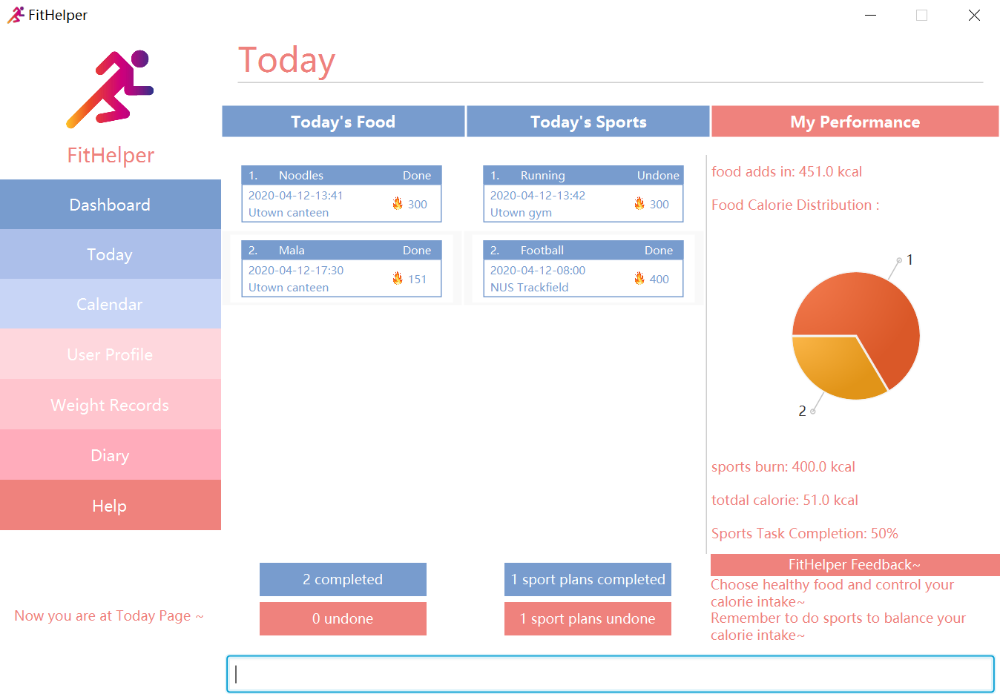

By: Team AY1920S2-CS2103-T09-4 Since: Feb 2020 Licence: MIT
- 1. Introduction
- 2. Quick Start
- 3. Common Fields and Keywords
- 4. Features
- 4.1. Viewing help :
help - 4.2. Adding an entry:
add - 4.3. Listing all entries :
list - 4.4. View Reminder :
reminder (optional)DATE - 4.5. Editing an entry :
edit - 4.6. Locating entries by name:
find - 4.7. Deleting an entry :
delete - 4.8. Sort the entries
- 4.9. Keep a diary
- 4.10. Reward
- 4.11. Clearing all entries :
clear - 4.12. Exiting the program :
exit - 4.13. Saving the data
- 4.14. Encrypting data files
[coming in v2.0] - 4.15. Check calorie intake/consumption reference values
- 4.16. Show calorie table
- 4.17. Record Profile
- 4.18. Update Profile Data
- 4.19. Weight Graph Page
- 4.20. Profile Page
- 4.21. Calendar View
- 4.22. Today Page
- 4.23. Weekly Report
- 4.24. Sort food consumption or exercise record
- 4.1. Viewing help :
- 5. FAQ
- 6. Command Summary
1. Introduction
FitHelper (FH) is for those who prefer to use a desktop app for managing contacts. More importantly, FH is optimized for those who prefer to work with a Command Line Interface (CLI) while still having the benefits of a Graphical User Interface (GUI). If you can type fast, FH can get your weight management tasks done faster than traditional GUI apps. Interested? Jump to the Section 2, “Quick Start” to get started. Enjoy!
FitHelper mainly serves as a fitness log book where users can mark down their diet and exercises entries and be reminded about their plans. They can also visualize their performance to be encouraged.
2. Quick Start
-
Ensure you have Java
11or above installed in your Computer. -
Download the latest
addressbook.jarhere. -
Copy the file to the folder you want to use as the home folder for your Fitness Helper.
-
Double-click the file to start the app. The GUI should appear in a few seconds.
 -
Type the command in the command box and press Enter to execute it.
e.g. typinghelpand pressing Enter will open the help window. -
Some example commands you can try:
-
list: lists all logs -
addsn/running t/Wednesday 6 pm l/utown gym c/500kcal es/False: adds an entry namedswimmingto the fitness log book. -
delete3: deletes the 3rd entry shown in the current list -
exit: exits the app
-
-
Refer to Section 4, “Features” for details of each command.
3. Common Fields and Keywords
-
n/ entry name
-
x/ entry type
-
t/ entry time
-
l/ entry location
-
c/ entry calorie
-
r/ remark
-
i/ index
-
k/ keyword (in
find) -
[DATE] a date in the fixed format of yyyy-mm-dd
-
[TIME] a time in the fixed format of yyyy-mm-dd-hh-mm
-
[INDEX] a positive integer indicating the position of an entry in the list
4. Features
Command Format
-
Words in
UPPER_CASEare the parameters to be supplied by the user e.g. inadd n/NAME,NAMEis a parameter which can be used asadd n/running. -
Items in square brackets are optional e.g
n/NAME [r/REMARK]can be used asn/swimming r/energy consuming but funor asn/running. -
Items with
… after them can be used multiple times including zero times e.g.[r/remark]…can be used asr/really fun,r/really fun r/helps me lose weightetc. -
Parameters can be in any order e.g. if the command specifies
n/NAME t/Wednesday 6 pm,t/Wednesday 6 pm n/NAMEis also acceptable. -
Xin this document refers to f/s, representing two types of entries: food and sports. e.g.addXrepresents eitheraddforadds;add[X]means the fieldXis optional. -
The field
TIMEshould be entered in the fixed format ofyyyy-mm-dd[-hh-mm]where thehoursandminutescan be omitted. -
The field
DATEshould be entered in the fixed format ofyyyy-mm-ddin order to trace the corresponding daily file.
4.1. Viewing help : help
Asks the application to display a condensed list of available functions with correct format of input. A link to the full User Guide is also provided after the list.
Format: help
4.2. Adding an entry: add
Adds an entry to the fitness log book
Format: addX n/NAME t/DATETIME l/LOCATION c/CALORIE es/False r/REMARK…
| An entry in the log book can have any number of remarks (including 0) |
Examples:
-
adds n/running t/Wednesday 6 pm l/utown gym c/500kcal es/True r/relly fun -
addf n/chicken rice t/Sunday 11 am l/Super Snacks c/460kcal es/False r/cheap and yummy
4.3. Listing all entries : list
Shows a list of all entries in the fitness log book.
Format: list[X]
If X is omitted, a list of mixed entries will be displayed.
Examples:
-
lists
4.4. View Reminder : reminder (optional)DATE
Shows a list of all undone tasks in the fitness log book.
Format: reminders (optional)DATE
If the field DATE is null, FitHelper will displays the undone tasks for the coming 7 days, otherwise, undone tasks for the specified date will be displayed.
Examples:
-
reminder -
reminder 2019-11-28
4.5. Editing an entry : edit
Edits an existing entry in the fitness log book.
Format: edit DATE [i/INDEX] [n/NAME] [t/TIME] [l/LOCATION] [c/CALORIE] [r/REMARK]…
Examples:
-
edit 2020-03-02 i/1 t/Friday 4pm l/PGP gym
Edits the time and email location of the 1st entry to beFriday 4pmandPGP gymrespectively. -
edit 2020-04-18 i/2 n/Fries r/
Edits the name of the 2nd entry to beFriesand clears all existing remarks.
4.5.1. Mark an entry as done
Users can mark an entry as done, either a meal or sports, where the calories intake and consumption will be taken in to consideration.
Format: edit DATE [i/INDEX] es/TRUE
4.5.2. Mark an entry as undone
Similar to the previous command, marking an entry as undone edits the es/ field and modify it as False.
Format: edit DATE [i/INDEX] es/False
4.6. Locating entries by name: find
Finds entries whose names contain any of the given keywords.
Format: find (optional) [x/TYPE] [k/ONE OR MOREKEYWORDS]
Examples:
-
find running
Returnsrunningandslow running -
find x/food Juice Apple
Returns any entry having namesJuice, orApple
4.7. Deleting an entry : delete
Deletes the specified entry from the fitness log book.
Format: delete [x/type] [i/INDEX]
Examples:
-
delete [x/sports] 2020-03-02 [index/2]Deletes the 2nd sports entry in the2020-03-02daily file in the fitness log book.
4.9. Keep a diary
Users can keep a diary by type in the diary keyword and the content of the diary. If the DATE is null, the content will be appended to today’s diary.
Format: diary (Optional)DATE CONTENT
Examples:
-
diary 2020-03-02 I feel good about myself after running.
Adds the commentI feel good about myself after running.to the diary on2020-03-02.
4.10. Reward
Users get rewarding points after doing exercises or controlling their calorie intake to a certain amount.
They can also be promoted to higher fitness level based on their rewading points.
Format: reward
The user’s current 'fitness level` and total rewarding points will be displayed.
4.11. Clearing all entries : clear
Clears all entries from the fitness log book.
Format: clear
4.12. Exiting the program : exit
Exits the program.
Format: exit
4.13. Saving the data
fitness log book data are saved in the hard disk automatically after any command that changes the data.
There is no need to save manually.
4.15. Check calorie intake/consumption reference values
Asks the application to show records of calorie intake of some common food (unit: kcal per serving) or calorie consumption of some common sports (unit: kcal per hour), whose description contains the keyword specified by the user. The recorded are searched within the application’s pre-installed data.
format: checkX KEYWORDS
example:
-
checkf apple -
checks swimming
4.16. Show calorie table
Asks the application to display a table that shows calorie intake from food consumption or calorie consumption from exercise in a particular day specified by the user.
format: tableX DATE
example:
-
tableX 2020-02-02
4.17. Record Profile
Adds new user basic personal data to profile.
Format: recordprofile addr/ADDRESS n/NAME g/GENDER h/HEIGHT cw/CURRENTWEIGHT tw/TARGETWEIGHT
Examples:
-
recordprofile addr/utown n/Alice g/female h/1.68 cw/50 tw/45 -
recordprofile addr/rvrc n/Bob g/male h/1.8 cw/70 tw/65.5
4.18. Update Profile Data
Update user data in the profile by attributes.
Format: update attr/ATTRIBUTE v/VALUE
Examples:
-
update attr/h v/1.7 -
update attr/name v/Alice Wang
4.19. Weight Graph Page
Weight graph page serves to be a summary for user’s weight and BMI changes according to time.
It shows user data in graph for easy understanding. By default, it will generate graph from all history data. User can also set a duration to generate graph for that specific time range.
Format: weightgraph (dr/yyyy-mm-dd yyyy-mm-dd)
-
Current Data Table
The table of user’s latest data of weight and computed BMI. BMI value is computed based on latest weight and height.
Weight value can be: below/ above/ equals to target wieght value.
BMI value can be: too low/ moderate / too high. -
Trend Graph - Weight
Display a trend graph of user’s weight. Target weight line and the gap between target and current weight will be highlighted in the graph. -
Trend Graph - BMI
Display a trend graph of user’s BMI. Lowest and highest healthy BMI lines will be highlighted in the graph to specify a healthy range. -
Progress Graph
Display a progress graph using coloring to indicate the gap between current Weight and Target weight. A percentage number will be shown explicitly in the graph.
Examples:
-
weightgraph -
weightgraph dr/2020-01-01 2020-02-14
4.20. Profile Page
Profile page serves to be a summary for basic user data.
It shows information includes: address, name, gender, height, current weight, target weight and current BMI.
Format: profile
4.21. Calendar View
Calendar view will display all the exercises and meals for each day of the current month. For past dates, signs of different colors will be highlighted to show whether the calories intake exceeds or is below the target.
For female users, the monthly period will be highlighted
Format for entering data: periodstart d/yyyy-mm-dd periodend d/yyyy-mm-dd
Format for entering calendar view: calendar
4.22. Today Page
Today page serves to be a summary for the daily arrangements.
It shows the daily schedule for the user. Users can see the entries for the day, a recommended lunch place, and their performances. They can also see their diary for the day as well as the rewarding point.
Format: today
-
Daily Schedule
The list of food and sports for "today" is displayed, with the status and comments. -
Recommended Dining Places
Recommended dining places for lunch are displayed, based on their distances to the location of entries at noon.
By default, the recommended dining place are ones nearest to the user address. -
Daily Routine
An line-dot graph of daily routine is displayed following the chronological order of the daily arrangements. -
Daily Performance
User perfoamance for the current day can be seen from the today page, based on the ratio of done and undone entries and calorie consumption. -
Diary Corner
Daily diary log will be displayed if the user has types in comments for the day.
4.22.1. Some Day Page
The Today Page for some day in the history can be displayed.
Format: today DATE
The DATE should be equal or prior to today. Requiring a Today Page for a future date will generate a blank page if that particular day does not have any entries.
|
Examples:
-
today -
today 2020-02-14
4.23. Weekly Report
A weekly report serves as a summary for the past week. The user can see his performance in the past week. The weekly report also contains his rewarding points, diary logs, and preferred sports and food from the previous week.
Format: weekreport
-
Weekly Performance
The weekly performance is generated based on the ratio of done and undone tasks and the calorie consumption, together with the system feedbacks. -
Rewarding Points
Rewarding points gained from the past week and current "fit level" is also shown. The weekly increment of rewarding points from past several weeks can be visualized. -
Trendy Food and Sports
Users can see his preferred food and sports, based on his entries for the past week.
4.23.1. Some Week Report
The Week Report for some week in the history can be displayed.
Format: weekreport DATE where DATE specifies the week it is in
The DATE should be equal or prior to days in the current week. Requiring a Week Report for a future week will generate a blank page if that particular day does not have any entries.
|
Examples:
-
weekreport -
weekreport 2020-02-14
4.24. Sort food consumption or exercise record
Sorts the records of food consumption or exercise workout based on time of record or calorie, in either ascending or descending order.
format: sortX -c/-t -a/-d
Examples:
-
sortf -t -a(sort records of food consumption in ascending order of recording time, i.e. the oldest record comes first) -
sorts -c -d(sort records of exercise workout in descending order of calorie burned during the workout)
5. FAQ
Q: How do I transfer my data to another Computer?
A: Install the app in the other computer and overwrite the empty data file it creates with the file that contains the data of your previous fitness log book folder.
6. Command Summary
-
Add
add n/NAME t/TIME l/LOCATION c/CALORIE [r/remark]… -
Clear :
clear -
Delete :
delete INDEX -
Edit :
edit INDEX [n/NAME] [t/TIME] [l/LOCATION] [c/CALORIE] [r/remark]… -
Find :
find KEYWORD [MORE_KEYWORDS] -
List :
list -
Help :
help -
Calendar :
calendar